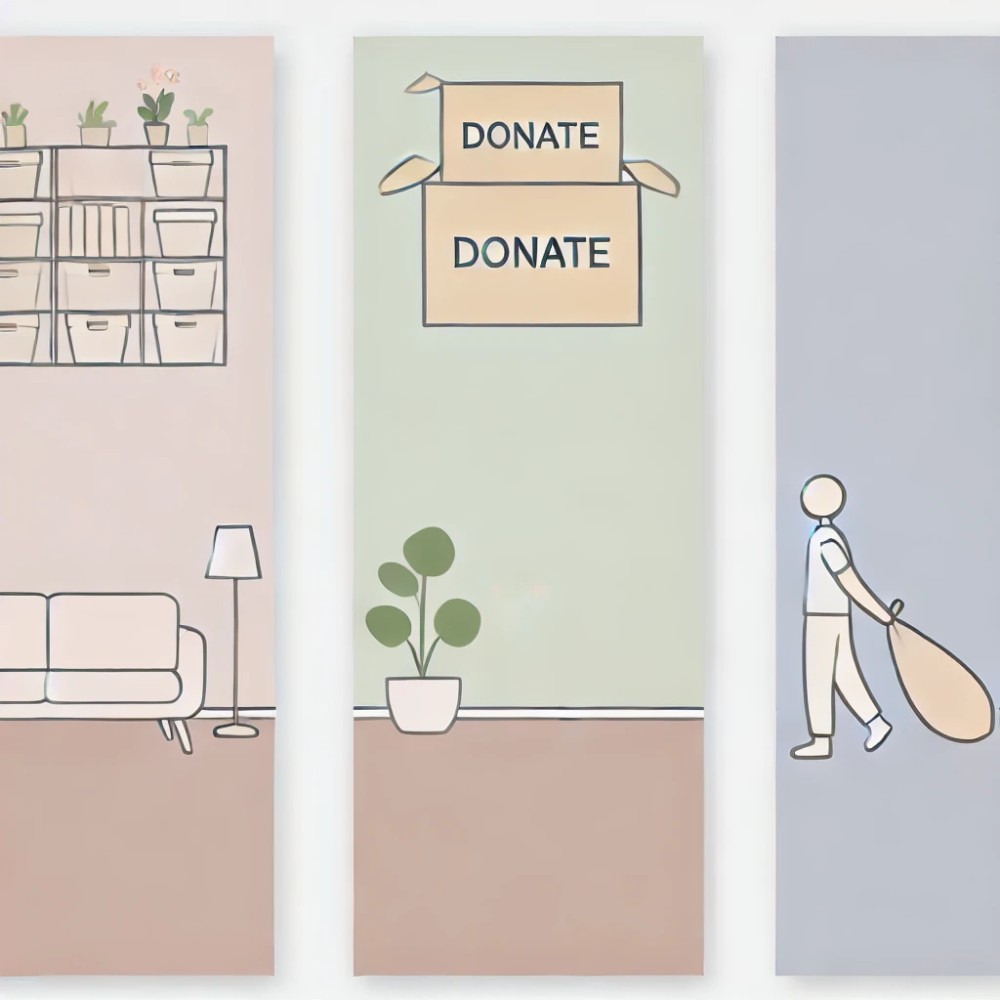
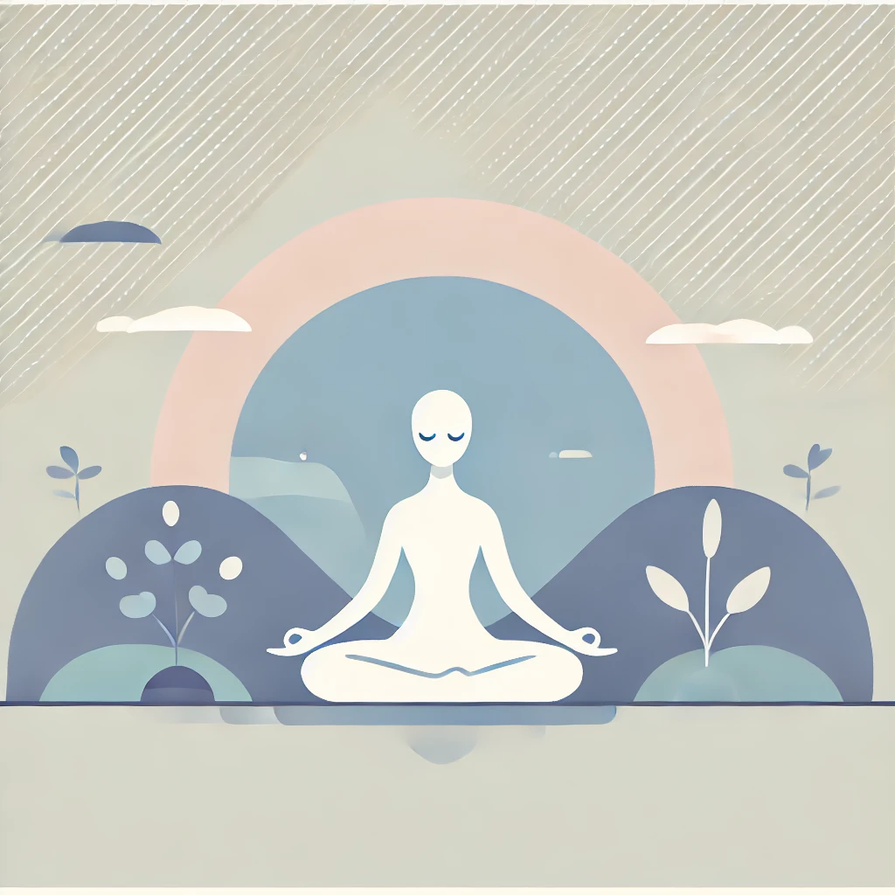
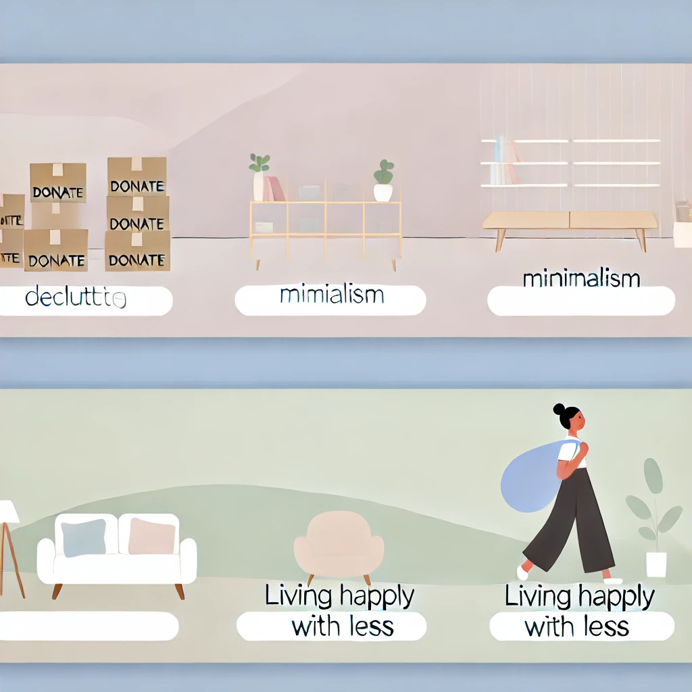

Dicas e Inspirações minimalistas para você viver com mais leveza
Descubra técnicas simples para organizar sua casa e criar um ambiente mais leve.
 Leia Mais →Explore como a filosofia minimalista está conquistando e o mundo e ajudando pessoas a encontrarem a paz interior.
 Leia Mais →Aprenda como pequenas mudanças podem transformar seu dia a dia e trazer mais felicidade.
 Leia Mais →